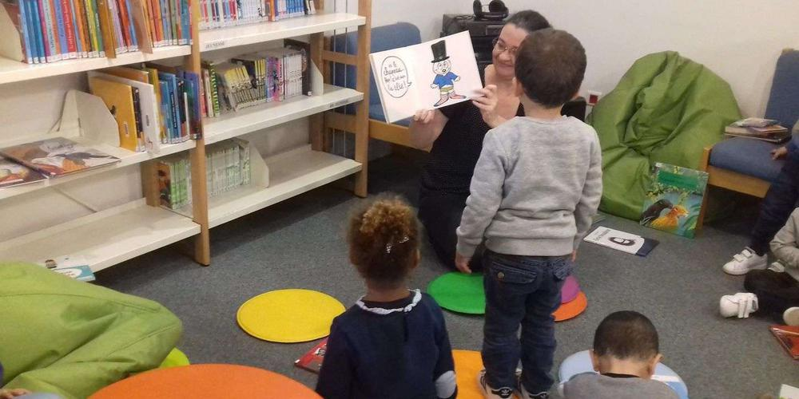

Festi Family


Festi Family est un projet de travail du lien parent-enfant, parent-jeune à travers la pratique culturelle, artistique et sportive. Il est l'extension d'un projet créé par le Centre Social et Culturel "La Colline", "Bouquet de Familles", qui visait à travailler le lien parent - très jeune enfant (de la naissance à trois ans), à travers des spectacles adaptés et des ateliers artistiques.
Le Festi Family a une ambition plus importante que le "Bouquet de Familles", puisqu'il cible un public plus large et se déroule sur l'ensemble de la commune.
Il vise plusieurs objectifs :
Il vise plusieurs objectifs :
- Travailler le lien parent-enfant grâce au partage de spectacles adaptés aux tranches d'âge et accompagnés par des professionnels formés à accueillir les émotions des enfants et des parents,
- Rendre accessible les lieux culturels, sportifs, lieux associatifs de la ville de Cenon, pour les faire connaître du public,
- Déplacer l'évenement dans toute la commune, y compris les quartiers prioritaires, pour être au plus près des habitants,
- Mobiliser l'ensemble des partenaires culturels, sportifs, associatifs de la commune, pour donner de la visibilité à leur travail.
- La communication en interne, entre les partenaires, pour que chacun en temps réel puisse suivre l'avancée du projet,
- La communication externe, n'ayant pas de personne formée attitrée au projet pour la création des visuels et la gestion des réseaux sociaux.
Ce festival de quinze jours a été mis en place sous plusieurs formes. Il a par exemple, était mené sur deux semaines différentes (l'une au mois de mai et l'autre au mois de novembre). Sa forme finale était quinze jours sur la période des vacances d'octobre, période où il y avait moins de manifestations sur la commune.
Deux comités permettait de mettre en place le Festival, un comité de pilotage et d'organisation constitué du Centre Social "La Colline" et de la ville de Cenon, et un comité technique qui réunissait tous les partenaires participant à l'action.
En dehors du fait que d'année en année, le Festival prenait de plus en plus d'ampleur et que de plus en plus de partenaires différents participait à sa mise en place, deux difficultés majeures se posait au comité de pilotage :
Après avoir vécue la formation LP MIND, il me paraît évident que nous aurions pu mettre en place de façon assez simple, surtout pour que la majorité des partenaires puissent s'en servir, un outil de travail collaboratif (Du type Trello ou autre) et un plan de communication efficace, avec programmation des posts sur les réseaux sociaux pour pouvoir informer le public et valoriser les partenaires en temps réel, sans que cela ne soit trop chronophage pendant la manifestation.
Grâce à la formation, je suis capable aujourd'hui, de penser différemment ce type de manifestation de grande ampleur, et de pouvoir déléguer une partie des tâches afférentes à des partenaires, sans que la distance ne soit un frein aux échanges (c'est également un des apprentissages forcé par le suivi d'une formation à distance).
Je peux également mettre en place un plan de communication simple, à partager entre plusieurs personnes pour maintenir la continuité malgré les abscences prévues ou imprévues.
Dans l'idéal, le Festi Family pourrait également avoir son propre site internet, qui permettrait, en plus de pouvoir communiquer, de garder une trace des différentes éditions et de pouvoir suivre l'évolution de l'action.